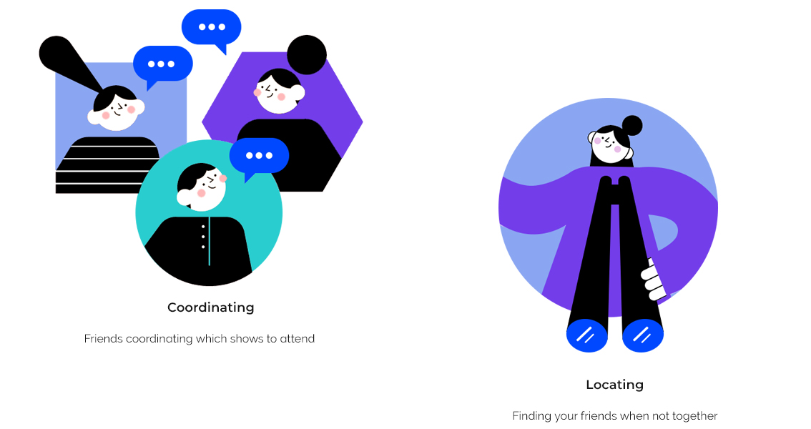
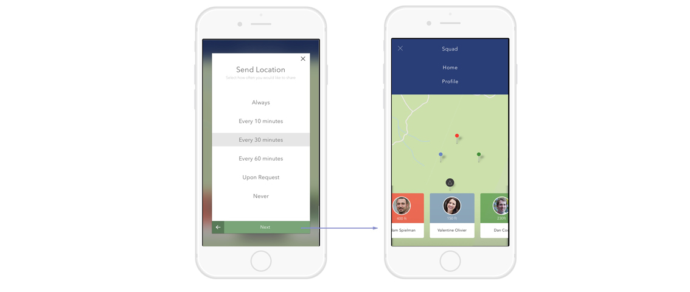
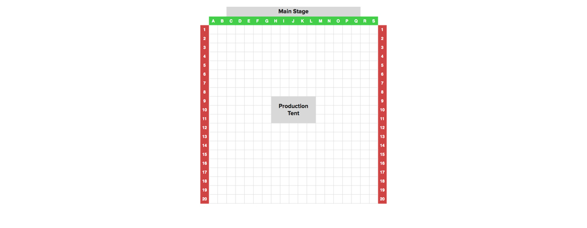
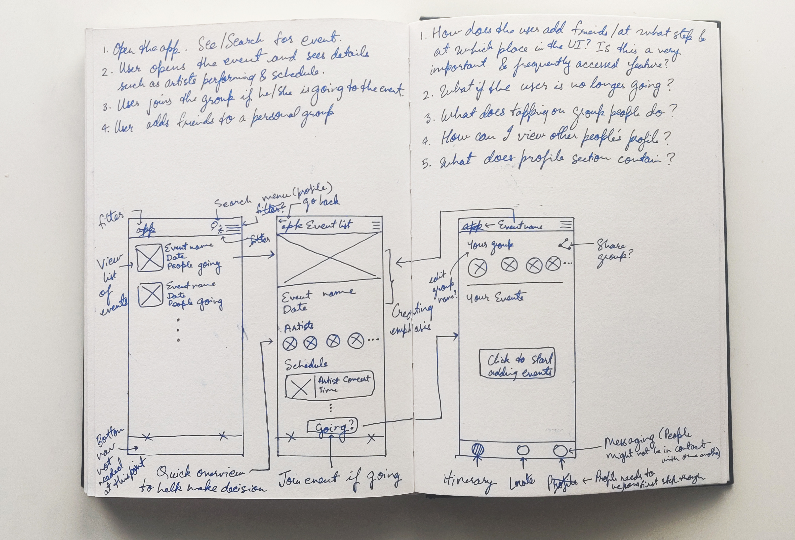
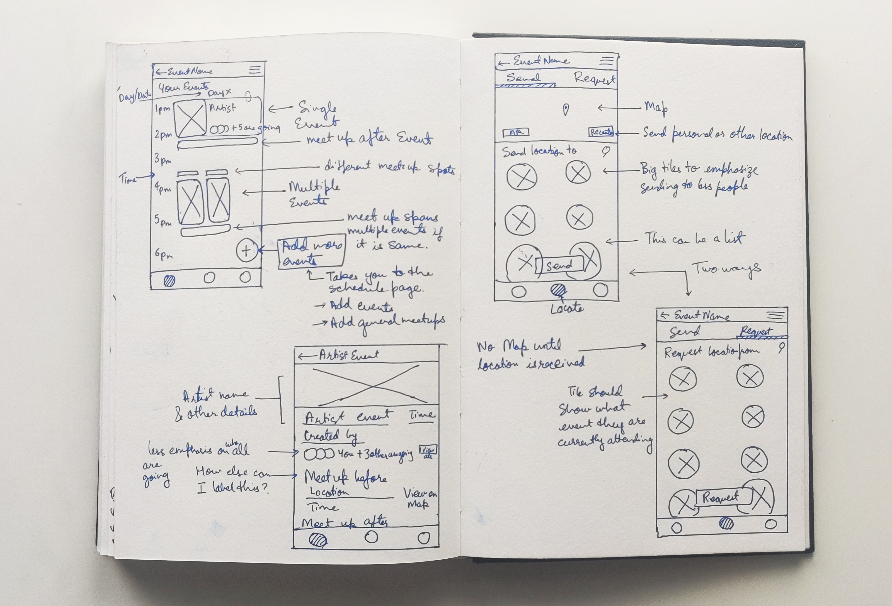

Millions of people attend music festivals such as Coachella in California. These festivals span multiple days where multiple artists perform at the same time. Design an experience that will help people coordinate with their friends on which shows to attend and how to find each other in the crowds during the festival.
...
The given problem statement presents two unique challenges:
Starting with user research, I read experiences of several users on online platforms to understand their needs and common frustrations. I read experiences of users on Reddit as well as other articles that highlighted problem at all the major music festivals. Based on this information, I was able to come with design implications.
To understand existing work in this field, I looked at two UX case studies on locating friends at a music festival.
Source: Squad app
In this case study, the author proposes the solution to use a P2P (Peer to Peer) network that allows users to keep track of their friends location without being connected to the internet which helps save the phone's battery. The author researched batterylife of Bluetooth vs GPS and found that Bluetooth uses less energy than GPS which is an important consideration when trying to save battery. However, this case study stood out to me for a different reason - the concerns regarding the sharing of location regularly. I believe continuous sharing of location with friends (or strangers you just met through your friends) can be dangerous and worrisome for many users. The design should allow users to share location only when requested and in a controlled manner.
Source: How to find your friends at a music festival
In this case study, the author proposes an analog reference system that gives friends a context to their location. In his solution, the author suggests stage area labelled with large letters fashioned across the top of the stage, and numbered flags strung over both sides of the crowd. This would create a grid making it easier for users to locate each other. However, this solution does not work beyond a certain extent. In extremely crowded concert area, viewing these analog numbers is nearly impossible. Besides this concert areas come in all shapes and sizes which would not allow to implement a rectangular grid. There needs to be a more smarter way to implement this which is effortless to use. While there are limitations to this grid approach, it highlights the importance of locating users within extremely close proximity and crowded areas.
...
Translating design implications into features, I brainstormed the design solution. I created low-fidelity wireframes to bring my ideas to life. I have included below the wireframes I drew during the brainstorming session.
 The design architecture below explains the flow of a user while using this app and the tasks that they can perform.